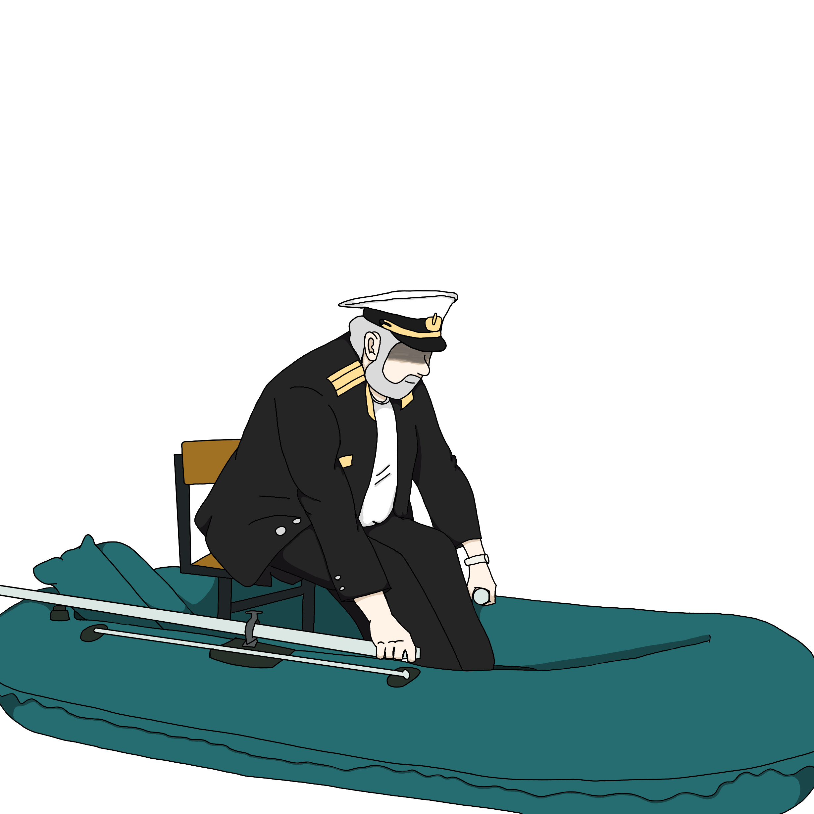

*Название аномалии*
ВНИМАНИЕ! ДОСТУП К ДАННОЙ ИНФОРМАЦИИ ИМЕЕТ ПЕРСОНАЛ С УРОВНЕМ ДОСТУПА III. ЕСЛИ ВАШ УРОВЕНЬ ДОСТУПА НИЖЕ, ДОБРОВОЛЬНО СДАЙТЕСЬ АДМИНИСТРАЦИИ ДЛЯ ПРИНЯТИЯ АМНЕЗИАКОВ.
Описание аномалии
B.F.U.-1952-22.04 впервые появился в КВН “Преподаватель и Студент” будучи студентом, изначально планировавшим помогать Фонду. Множество научных сотрудников положительно отзывались о деятельности объекта. Никто точно не знает предел его способностей, но всем известно точно: сценический образ лодочника многократно усиливает его влияние. Худенко не хочет раскрывать все свои карты. Тем не менее он является незаменимым сотрудником Фонда.
Способности, которые известны Фонду
1. Объект обладает мистической аурой, заставляющей окружающих соглашаться со всеми своими решениями.
Если захочет устроить ледниковый период, то никто не будет против.
2. Умеет ходить по воде.
3. Обладает невероятными познаниями в области математики.
4. Может превратить не понравившегося студента в лодку или в шляпку лодочника.
5. Имеет способность вызывать галлюцинации, создающие ощущения, близкие к тем, что испытывает тонущий
человек.
Особые условия содержания
Надзор над данным объектом необходимо проводить перманентно. Если объект оказывает влияние на окружающих, и/или мешает работе учреждения, то его необходимо поместить в одиночную камеру, пока действие объекта на пострадавших не прекратиться.
Воздействие аномалии на человека
Не беспокойтесь, не один ученый пострадал
(В смысле куча ученых пострадало, (!!!) НЕ включать эти скобки в итоговый продукт)